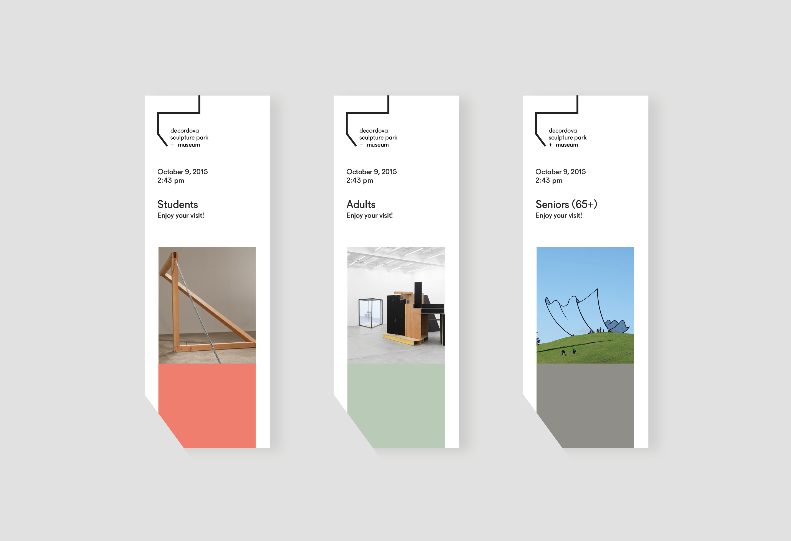
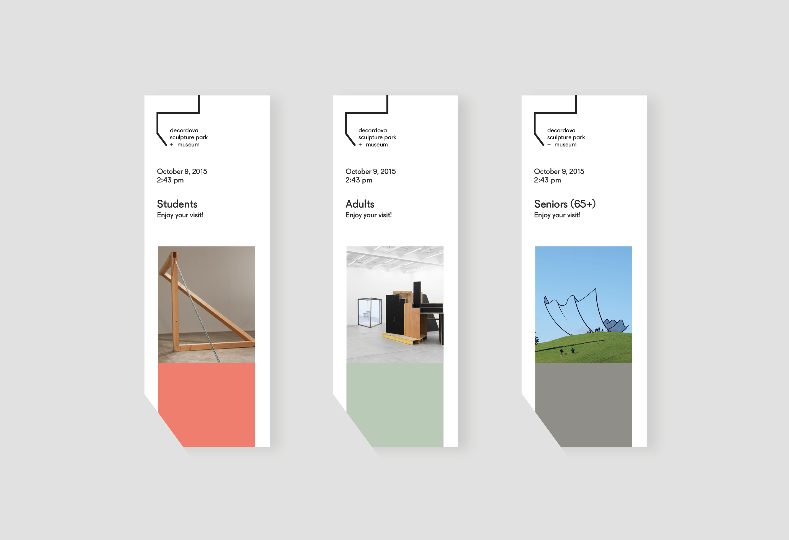

deCordova Rebrand
Rebrand of deCordova Sculpture Park and Museum in Massachusetts. The deCordova is a public space consisting both inside and outside - of constantly changing sculptures and various art pieces. Thus, focusing on the changing aspect and the simplicity of the contemporary art, the rebrand emphasizes on a single line: simple and flexible.
(View Current Website)


 



Website Design
Continuing on with the branding, I redesigned DeCordova museum's website that unifies my branding as a system to create the website's layout. The whole website is contained within my logo, which shows the flexibility of the single line.
Initial Sketches